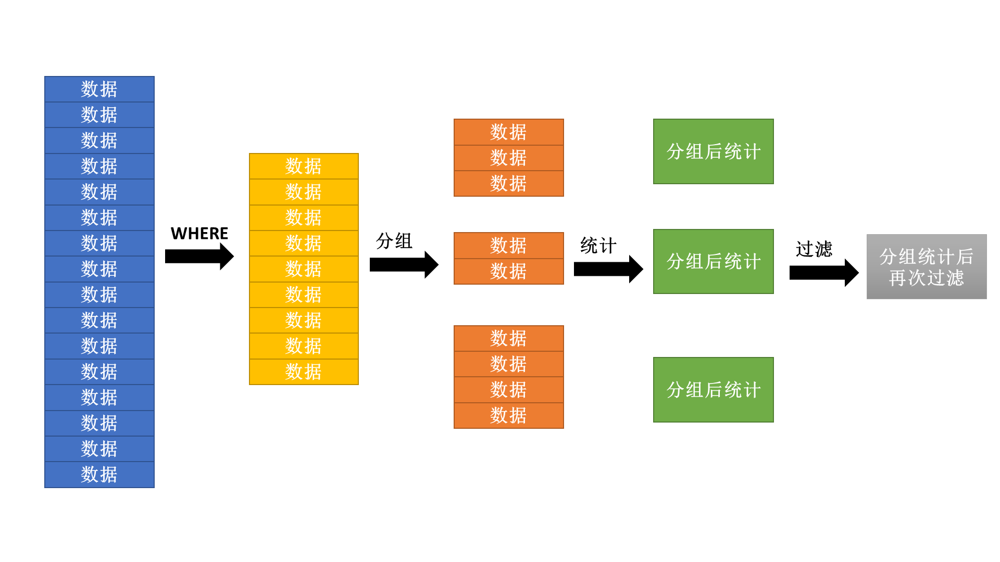

第 10 节 多表查询
分组统计查询其核心的问题就在于分组的处理上。要进行分组统计就需要考虑两个层次：统计操作、分组操作。
统计函数（分组函数、组函数）
在之前接触过一个COUNT()函数，这个函数的主要作用是可以统计出数据表中的数据行的个数，这个本身就属于一个统计函数，而与之类似的还有SUM()、AVG()、MIN()、MAX()。
范例： 查询出公司的人数、平均工资、每月的总支出
SELECT COUNT(*),AVG(sal),SUM(sal) FROM emp;
范例： 查询出工资的最高和最低工资
SELECT MAX(sal),MIN(sal) FROM emp;
范例： 查询出公司的平均服务年限 现在没有一个字段是明确表示出年限的，对于服务年限只能够通过计算得到。
SELECT AVG(MONTHS_BETWEEN(SYSDATE,hiredate)/12) FROM emp;
范例： 查询公司的最早雇佣日期和最晚雇佣日期
SELECT MIN(hiredate),MAX(hiredate) FROM emp;
注意：对于统计函数而言，里面有一个最为常用的函数：COUNT()，所以对于COUNT()函数有如下说明:
- COUNT()函数的主要功能是统计记录个数，如果表中没有记录，则COUNT()统计结果是0，而不是null；
SELECT COUNT(*),AVG(sal) FROM bonus; - 对于COUNT()函数有三种用法：COUNT(*)、COUNT(字段)、COUNT(DISTINCT 字段)
- 如果要想统计出表的行数，最简单的罪罚是使用COUNT(*);
SELECT COUNT(*) FROM emp; - 如果现在某一个列上的数据没有null，那么使用COUNT(字段)和COUNT(*)的救国是相同的，如果有null，则null是不统计的；
SELECT COUNT(*),COUNT(empno) FROM emp; SELECT COUNT(*),COUNT(mgr) FROM emp; - 如果现在某一个列上拥有重复的数据，统计的时候不想出现重复则使用DISTINCT处理；
SELECT COUNT(*),COUNT(DISTINCT job) FROM emp;
- 如果要想统计出表的行数，最简单的罪罚是使用COUNT(*);
大部分情况下进行COUNT()统计的时候都会采用“COUNT(*)”的形式完成处理。
分组统计
要想进行分组可以使用GROUP BY子句，此时的SQL语法定义如下：
④SELECT [DISTINCT] 分组字段 | 统计函数
①FROM 数据表1 [别名], 数据表2 [别名], ...
②[WHERE 过滤条件(s)]
③[GROUP BY 分组字段, 分组字段, ...]
⑤[ORDER BY 字段 [ASC | DESC], 字段 [ASC | DESC],...];
范例： 按照部门编号进行分组，查询出每个部门的人数、平均工资
SELECT deptno,COUNT(*),AVG(sal)
FROM emp
WHERE deptno IS NOT NULL
GROUP BY deptno;
范例： 统计每个职位的最低和最高工资
SELECT job,MAX(sal),MIN(sal)
FROM emp
GROUP BY job;
之所以选择deptno和job主要原因是因为这两个列上存在有重复的数据信息。
实现了分组虽然是一件看起来很容易的事情，但是对于分组操作之中是存在一些定义要求的；
- 在编写查询语句时如果没有编写GROUP BY子句，则这个时候的SELECT子句之中只能够出现统计函数，表示对整表数据进行统计操作（整表分为一组）。
-- 错误的语句 SELECT ename,COUNT(*) FROM emp;-- 正确的语句 SELECT COUNT(*) FROM emp; - 在使用GROUP BY查询之中，SELECT子句里面只能够出现分组字段和统计函数，其他的任何字段都不允许出现；
-- 错误的语句 SELECT ename,job,COUNT(*) FROM emp GROUP BY job;-- 正确的语句 SELECT job,COUNT(*) FROM emp GROUP BY job; - 在进行分组查询的时候，统计函数允许嵌套，但是此时的SELECT子句之中不能够出现任何字段，包括分组字段。
-- 错误的语句 SELECT deptno,MAX(AVG(sal)) FROM emp GROUP BY deptno;-- 正确的语句 SELECT MAX(AVG(sal)) FROM emp GROUP BY deptno;
对于统计查询而言，最麻烦的部分就是以上的几个定义。
多表查询与分组统计
在之前进行的分组统计都是采用了单表的形式完成的处理，于是下面希望乐意在多表查询上实现分组的统计处理操作。
范例： 查询出每个部门的名称、人数、平均工资
- 确定要使用的数据表：
- dept表：部门名称；
- emp表：得到统计信息；
- 确定已知的关联字段：
- 雇员与部门：emp.deptno=dept.deptno；
第一步：转换需求，查询出每个部门名称、部门的雇员标号、雇员工资；
SELECT d.dname,e.empno,e.sal
FROM dept d,emp e
WHERE d.deptno=e.deptno;
第二步：这个时候发现dname字段上存在有重复的数据信息，按照分组的原则来讲，有重复就可以考虑分组；
SELECT d.dname,COUNT(*),AVG(sal)
FROM dept d,emp e
WHERE d.deptno=e.deptno
GROUP BY d.dname;
第三步：现在要求查处所有的部门，可是现在只显示出了三个部门，因为缺少外连接的控制。
SELECT d.dname,COUNT(empno),AVG(sal)
FROM dept d,emp e
WHERE d.deptno=e.deptno(+)
GROUP BY d.dname;
范例： 查询出每个工资等距对应的人数，以及此等级的最高工资
- 确定要使用的数据表：
- salgrade表：等级的名称；
- emp表：等级的信息统计；
- 确定已知的关联字段：
- 雇员和工资等级：emp.sal BETWEEN salgrade.losal AND salgrade.hisal;
第一步：查询每个工资等级以及具备此等级的员工编号、工资。
SELECT s.grade,e.empno,e.sal
FROM salgrade s,emp e
WHERE e.sal BETWEEN s.losal AND s.hisal;
第二步：现在等级的列上出现有重复，所以可以进行分组统计
SELECT s.grade,COUNT(e.empno),MAX(e.sal)
FROM salgrade s,emp e
WHERE e.sal BETWEEN s.losal AND s.hisal
GROUP BY s.grade;
范例： 查询出每个部门的编号、名称、位置、部门人数、平均工资
- 确定要使用的数据表：
- dept表：部门的编号、名称、位置；
- emp表：雇员的信息统计；
- 确定已知的关联字段：
- 部门与雇员：emp.deptno=dept.deptno。
第一步：查询出每个部门的编号、名称、位置、雇员编号、工资
SELECT d.deptno,d.dname,d.loc,e.empno,e.sal
FROM dept d,emp e
WHERE d.deptno=e.deptno(+);
第二步：现在可以发现是三个列一起重复，所以这个时候可以进行三个列的统一分组操作
SELECT d.deptno,d.dname,d.loc,COUNT(e.empno),AVG(e.sal)
FROM dept d,emp e
WHERE d.deptno=e.deptno(+)
GROUP BY d.deptno,d.dname,d.loc;
如果要想按照多个列分组，则要求：这多个列的内容一起重复着，这样的曹组往往都要结合多表查询一起出现。
HAVING子句
在讲解HAVING具体做法之前，首先来看这样一个查询。
范例： 按照职位分组，查询出平均工资高于1200的所有职位信息以及该职位对应的人数、平均工资
SELECT job,COUNT(*),AVG(sal)
FROM emp
WHERE AVG(sal)>1200
GROUP BY job;
但是发现在执行时出现了错误信息：ORA-00934: 此处不允许使用分组函数。
分析：错误出现的原因？
- 按照SQL语法执行顺序来讲，先执行的是WHERE，在执行的分组，而后执行的是SELECT统计；
- 如果在WHERE里面使用统计函数，那么这是一个逻辑上的错误；

所以分组后进行的过滤统计是要求在HAVING子句中实现的，那么这个时候SQL语法如下：
⑤SELECT [DISTINCT] 分组字段 | 统计函数
①FROM 数据表1 [别名], 数据表2 [别名], ...
②[WHERE 过滤条件(s)]
③[GROUP BY 分组字段, 分组字段, ...]
④[HAVING 分组后过滤]
⑥[ORDER BY 字段 [ASC | DESC], 字段 [ASC | DESC],...];
范例： 使用HAVING
SELECT job,COUNT(*),AVG(sal)
FROM emp
GROUP BY job
HAVING AVG(sal)>1200;
总结：HAVING与WHERE区别？
- WHERE：是在GROUP BY分组前使用，表示对要分组的数据进行筛选，不允许使用统计函数；
- HAVING：在GROUP BY之后使用，允许使用统计函数，针对分组后的数据进行筛选。
分组统计案例
现在已经清楚了整个基础的SQL操作，下面做两个简单的程序。
案例一：查询所有非销售人员的工资的总和，并且要求满足同一工作的雇员的工资总和大于5000，显示的结果按照工资的总和由高到低排序。
- 查询所有不是销售的雇员，直接使用WHERE子句做过滤
SELECT * FROM emp WHERE job!='SALESMAN'; - 查询所有非销售人员的工资的总和
SELECT job,SUM(sal) FROM emp WHERE job!='SALESMAN' GROUP BY job; - 同一工作的雇员的工资总和大于5000
SELECT job,SUM(sal) FROM emp WHERE job!='SALESMAN' GROUP BY job HAVING SUM(sal)>5000; - 显示的结果按照工资的总和由高到低排序
SELECT job,SUM(sal) sum FROM emp WHERE job!='SALESMAN' GROUP BY job HAVING SUM(sal)>5000 ORDER BY sum DESC;
案例二：统计出所有领取佣金和不领取佣金雇员人数、平均工资
- 此时最直接的做法就是按照佣金分组
SELECT comm,COUNT(*),AVG(sal) FROM emp GROUP BY comm;
这个时候会发现，不同的佣金变为了一组，不是所需要的结果。
- 统计出所有领取佣金的雇员人数、平均工资；
SELECT '领取佣金' info,COUNT(*),AVG(sal) FROM emp WHERE comm IS NOT NULL; - 统计出不领取佣金的雇员人数、平均工资；
SELECT '领取佣金' info,COUNT(*),AVG(sal) FROM emp WHERE comm IS NULL; - 发现以上的两个查询范湖的结果是相同的，使用联合将其关联
SELECT '领取佣金' info,COUNT(*),AVG(sal) FROM emp WHERE comm IS NOT NULL UNION SELECT '不领取佣金' info,COUNT(*),AVG(sal) FROM emp WHERE comm IS NULL;
对于分组统计操作不一定只有GROUP BY可以解决，这些集合操作可以将多个查询结果整合在一起显示。